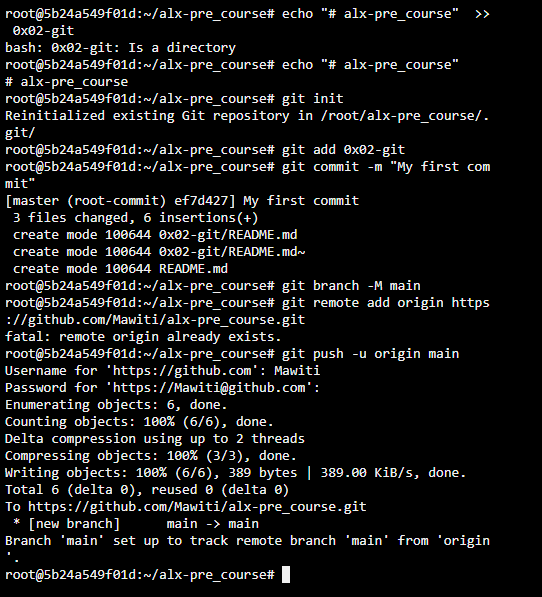
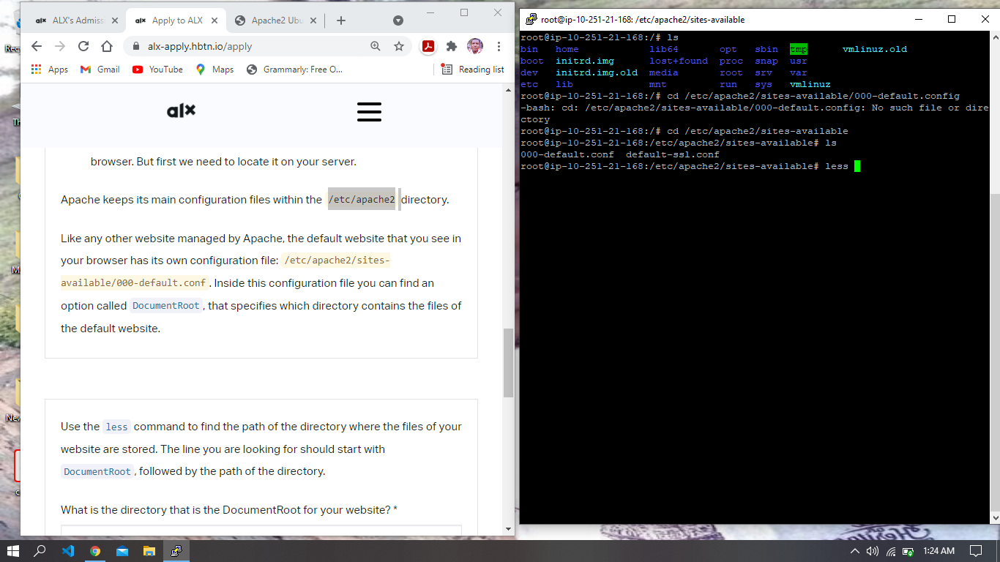
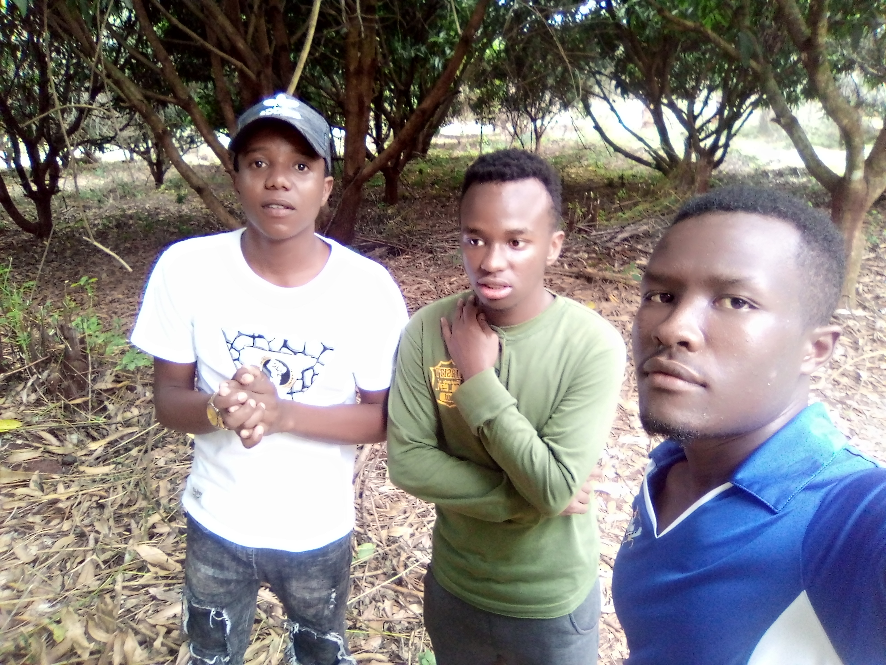

MAWITI KENYA
MOTTO
Motivated in coding and programmer to solve modern problems.
CORE VALUES
- integrity
- team work
- respect
- action oriented
- family
Photo of MAWITI
- Working on remote server 
- Lerning how to use server 
- Natural scenary
- My friends 
- Remarks

i like coding and programming therefore i have to go to the field and identify the
world's modern problems
and create modern solutions through programming.